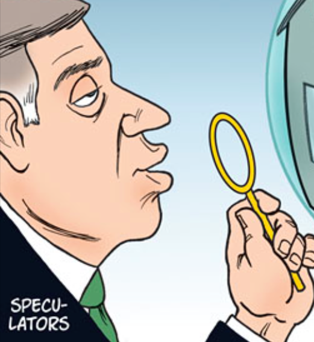
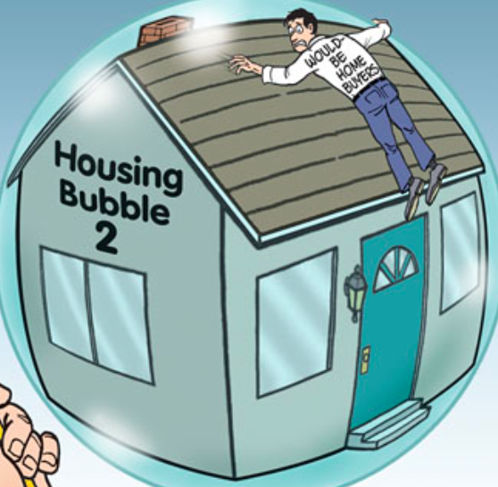
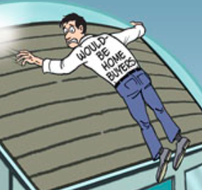
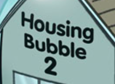

spending far too much time thinking about the BS in SB
Art Critic: How Is This House Floating?
This is the first (and, hopefully, last) installment of Art Critic, in which we attempt a negative definition of art by excluding everything in Santa Barbara.
Steve Greenberg is widely thought to be a cartoonist, but there has historically been little evidence supporting that claim. This week, however, the Santa Barbara View threw their weight behind the credibility of rumors that Greenberg in fact draws pictures, accompanied with text, that aim to provide humorous commentary on current political affairs. By reprinting his piece “Housing Bubble 2”, which first appeared in the Ventura Starlast month, the suggestion is that the work meets enough of the criteria listed above to be considered a “political cartoon”.
His bubble wand is colored gold in order to symbolize his wealth (this is because gold is associated with wealth because it is valuable)
What first captures the viewer’s attention is this man in the bottom left. He is labeled “SPECULATORS”, implying that he represents multiple speculators. But which speculators?
The house has curved walls because it is inside a bubble, which distorts light and creates that sort of illusion
The second large element of “Housing Bubble 2” makes it clear that our topic is housing speculators, who attempt to leverage fluctuations in real estate prices in order to make money quickly. This practice can artificially “inflate” house prices and create a housing “bubble”—represented above by the house inside a bubble. The house, inside the bubble, rising up in the air, represents the rising house prices.
The man on the roof represents the would-be-homebuyer whose dream house is “slipping away” (it would be visually uninteresting to show the worth of the house in contrast to the would-be-homebuyer’s means, so the cartoonist shows him on the house, but slipping off it)
As a result of the “bubble”, lower- and middle-class individuals may find themselves no longer able to afford to purchase a house.
Don’t imagine that these words are actually painted on the house, because it’s supposed to be a good-looking house that the would-be-homebuyer wants to buy
The “2” at the end of “Housing Bubble 2” (which is also the title of the drawing) is supposed to inform us that this is the second housing bubble that has occurred. Another housing bubble happened a while ago.
In conclusion, the Santa Barbara View is correct. This is a cartoon, it’s a good cartoon, and it is funny. It’s funny because it’s funny to imagine a grown man blowing a bubble wand, and a house floating in the air. Considered alongside his last drawing, which was funny because some places have a larger property tax base than others, there is little doubt that Steve Greenberg is a very funny political cartoonist.
This isn’t actually Steve Greenberg, he’s a real person and not a drawing, but this is a drawing he did of himself to symbolize the fact that he draws things (he draws cartoons, not just himself)
Haven’t We Done Enough For (To) Those Foreigners?
Harris Sherline continues to provide living proof that we must not mean what we say. Having previously issued a revolutionary call to bring down capitalism under the guise of a neoliberal propaganda piece, the weekend found him penning a thoughtful essay—pretending to be a bit of bland parochialism—on the damage done to the world by American good intentions.
From the vantage point of my own background, which includes about 15 years of active involvement with nonprofits, my perception is that very few communities have the extent of participation in charitable activities as our valley. Coming from Los Angeles via Santa Barbara, where my wife and I lived for seven years, I have never seen a community where so many of its residents are involved in some type of charitable work.
Such an impulse to kindness is itself praiseworthy, of course, but Sherline recognizes that much depends on how it is acted upon. He is therefore troubled by the fact that “various people and organizations feel it necessary to go outside the local area to help others.”
A reader unaware of Sherline’s politics might be alarmed and think that he is promoting some sort of tight-fisted nationalism in which those across borders are less deserving of aid. But of course, that is not the point he is driving at. That point is brought out in a brilliant bit of dark humor:
We are the most generous people on Earth and have done more for others around the world than any other society in history—ever. Yet we seem to be frequently castigated, both at home and abroad, for our failure to cure the world of all of its ills or for not preventing the starvation and privation that exist almost everywhere on Earth.
By reminding us of the incalculable death and destruction caused worldwide by the United States, and quietly reminding us that our good intentions with regard to the rest of the world are often misguided and sometimes do more harm than good, Sherline is making a point similar to that made by feminists in India when Harvard decided to tell them how to end gender violence in their country:
Keep your colonialist good intentions to yourselves.
You can’t see it right now, but my arm is outstretched to shake your hand. Close your eyes and go with it.
Run.
Creating a Beast: Women’s Health and Social Noise
The idea of PMS as a great hormonal tide that washes away women’s rationality does not, of course, correspond to reality. Many were probably nonetheless shocked last year when University of Toronto researchers published a literature review suggesting that many of the phenomena attributed to PMS may have their source elsewhere. (Among those unsurprised by their findings was surely Emile Nelson, who has long insisted that women never had any rationality to begin with.) Dr. Sarah Romans even suggested that
the whole PMS notion serves to keep women non-irritable, sweet, and compliant the rest of the time. There is a range of paradoxes—world-turned-upside-down events—like festivals, Mardi Gras, where people are socially prescribed to behave out of role. In Europe in medieval times there’d be one day a year where the lord would serve his own servants and workers, and then the rest of the time it’s the other way, servant obeying the master. And these kinds of rituals serve to embed the normal behavior. I think PMS is a bit like that. “We’ll let you be cranky and bad-tempered now, but just for one or two days. The rest of the time you’ve got to be like a true woman.”
It’s been almost a year since Romans et al. published their results in Gender Medicine. Did this finally change our narratives about women’s emotionality? Starshine Roshell took to the Independent today to issue a pessimistic progress report.
Roshell’s column contains two distinct threads. One is a straightforward exposition of what should, by now, be obvious:
I’m sure you’d love to be able to dismiss our emotional extremes as the hormone-fueled flare-ups of an estrogen-addled lunatic rather than have to consider whether you’ve actually done something wrong (HOW HARD IS IT TO PICK A DIFFERENT FORK?). But it’s not like we’re schizophrenic, possessed by the devil, or on a bender; we’re still us, reacting to genuine feelings about real things.
…
It’s worth reminding you that men behave unpredictably and unpleasantly from time to time: The teenaged boy who roars from sulking to rage in 60 seconds flat, the grown man who grows despondent when we’re out of coffee or snippy when he misses his morning workout … Those chemical surges’ll mess with your mind!
But if empathy alone won’t keep you from playing the condescending “You’ve got PMS” card, then do it for your own safety. Because when you dismiss our concerns—deranged as they may seem—as the bogus byproducts of a biological function, it belittles our distress and defines us as poorly engineered, malfunctioning freaks.
Once we’ve been labeled with the scarlet P, we can no longer be heard; even legitimate worries and reasonable frustrations are ignored as involuntary theatrics.
But woven between these paragraphs is another thread that disrupts and confuses the points being made. It is the trope of PMS-induced hysteria, which Roshell introduces to show that the old story is still the one being told:
We have arrived, yet again, at that odious interlude of each lunar cycle when there is a small chance that I will throw something heavy at your head. There’s also a chance that during the next three days I will snatch something out of your hands because you are doing it wrong, shriek “WHO ATE THE LAST BROWNIE?” at a pterodactyl pitch, and begin weeping inconsolably because you set the table and gave me that fork I don’t like—that one freaking fork that is so easy to avoid in the utensils drawer and that you know very well I dislike, but you just had to put it at my place, didn’t you? You never have respected me, not for one minute of our lives, and this is how you choose to show me.
Welcome to hell, fellas.
…
Your wife/mother/girlfriend/sister is a porcupine who has swallowed a hand grenade and doesn’t want to die alone. But with a steady supply of wine and simple carbohydrates, she might—might—be able to keep The Beast shackled in the basement of her soul.
Roshell’s intention is clearly to illustrate how even the most sensible conversation about menstruation takes place against the backdrop the bad old narrative. Not only is this sort of conversation constantly at risk of being actively derailed by the invocation of that backdrop, but decades of sexism and misinformation have lead listeners to immediately associate such conversations with problematic myths. The second thread of Roshell’s column can therefore be thought of as the social noise in the background of any discussion of women’s emotions, perpetually distracting us from what really matters.
Unfortunately this strategy is actually too effective because all we’re going to get out of this column is that women
have no option but to cash in that free pass, stop trying to tame our tempers, and erupt in a delirious streak of long-overdue, blame-my-uterus, full-volume flipping freak-outs.
I’ve decided to enter the race for mayor as a write-in candidate. As our newly elected mayor, my first order of business will enure that all official correspondence takes the form of rhetorical questions.
Let’s brush aside my qualifications and everything else that’s relevant and discuss an issue the surface of which was barely scratched—the police chief’s idea for a door-to-door campaign to discuss the “homeless problem”. If I am so adept at this art of misdirection already, will I not be an admirable politician?
Now that I’ve hitched my announcement of candidacy to a topic that will only interest the people who comment at the Santa Barbara View—how about we dishonestly suppose that such a campaign is motivated by some abstract principle, and then generalize that principle in the hopes of deriving some absurd conclusion?
Doesn’t it say something about my priorities that this is the most important thing I can think to write about?
Most importantly, have you learned anything about me and my political views in this letter?
Thank you for your time. I hope to see you at the next City Council meeting.